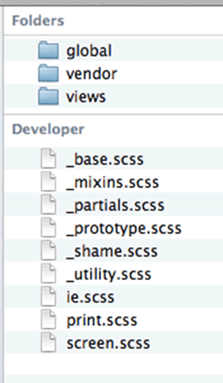

CSS Preprocessors
Presented by Michael Trythall / @mtrythall
http://git.io/729TEQ for slides & code samples
Hello
- I'm Mike
- Head of UX at Lincoln Loop
- Front-end + Design for >15 years
- Using CSS preprocessors for ~2 years
Following Along
Slides, examples, and more at http://git.io/729TEQ
Trying the Examples
gem install sass and sass file
kthx let's go
What are CSS Preprocessors?
Think CoffeeScript for CSS, sorta kinda
Why use a CSS preprocessor?

What's out there?
What's the Difference?
Sass/SCSS
- Ruby-powered
- Has Compass
- Used by designers and FE folks
- Very friendly syntax
- More features than other preprocessors
- Ecosystem better for building custom things
- Docs complete but not pretty
LESS
- JavaScript-powered
- Has Bootstrap
- Used by lots of people, but mostly Bootstrap users
- Stranger syntax than Sass/SCSS
- Fewer, but enough, features
- Ecosystem better for building Bootstrappy things
- Docs complete (enough) and very pretty
Alright, what can they do?
Nesting
header {
font-size: 5em;
.title { // header .title { font-size: 10em; }
font-size: 10em;
a { // header .title a { background: green; color: white; }
background: green;
color: white;
}
}
}
header {
font-size: 5em;
}
header .title {
font-size: 10em;
}
header .title a {
background: green;
color: white;
}
Parent References
a {
color: blue;
&:hover { // a:hover
color: yellow;
}
}
a {
nav & { // nav a
color: green;
}
}
a {
color: blue;
}
a:hover {
color: yellow;
}
nav a {
color: green;
}
Imports
Non-blocking, single file imports
@import "base";
/* Authored Dependencies */
@import "mixins";
@import "partials";
@import "utility"; // general classes used by everything
/* Patterns */
@import "global/elements"; // common elements, header, anchors, table, etc
@import "global/forms";
@import "global/components"; // special design components, non-interactive widgets
@import "global/widgets"; // any component with interactivity or IO
/* Structure */
@import "global/layout";
@import "global/header";
@import "global/footer";
@import "global/side-nav";
Variables (SASS/Scss)
$font-size: 16px;
$text-color: blue;
a {
color: $text-color; // blue
}
p {
$text-color: green;
$background-color: black;
a {
background-color: $background-color;
color: $text-color; // green
}
}
h1 {
font-size: $font-size * 4; // 64px
color: $text-color; // green!
}
Variables (SASS/Scss compiled)
a {
color: blue;
}
p a {
background-color: black;
color: green;
}
h1 {
font-size: 64px;
color: green;
}
Variables (LESS)
@font-size: 16px;
@text-color: blue;
a {
color: @text-color; // blue
}
p {
@text-color: green;
@background-color: black;
a {
background-color: @background-color;
color: @text-color; // green
}
}
h1 {
font-size: @font-size * 4; // 64px
color: @text-color; // blue!
}
Variables (LESS, compiled)
a {
color: #0000ff;
}
p a {
background-color: #000000;
color: #008000;
}
h1 {
font-size: 64px;
color: #0000ff;
}
Math!
p {
$width: 30em;
font: 30px/2px; // Normal CSS, no division
width: $width/2; // Using a variable causes division
height: (500px/2); // Uses parentheses, does division
margin-left: 10px + 10px/5px; // Uses +, does division
}
p {
font: 30px/2px;
width: 15em;
height: 250px;
margin-left: 12px;
}
Built-ins
p {
color: lighten(green, 5%);
background-color: darken(yellow, 10%);
font-size: ceil(12.78);
line-height: floor(12.78);
}
p {
color: #009a00;
background-color: #cccc00;
font-size: 13;
line-height: 12;
}
Plus dozens more
Mixins
@mixin padding ($param: 1em) { // $param has a default value of 1em
padding: $param;
}
@mixin border ($direction: bottom, $weight: 1px, $style: solid, $color: black) {
border-#{$direction}: $weight $style $color; // String interpolation
}
.box1 {
@include padding; // padding: 1em;
background: blue;
}
.box2 {
@include padding(5em); // padding: 5em;
@include border(left, 10px, dotted, red); // border-left: 10px dotted red;
background: green;
}
Mixin (compiled)
.box2 {
padding: 1em;
background: blue;
}
.box1 {
padding: 5em;
border-left: 10px dotted red;
background: green;
}
Functions
Not in LESS
@function add-sizes($size1, $size2){
@return $size1 + $size2
}
p {
font-size: add-sizes(3em, 10em);
}
p {
font-size: 13em;
}
Extends
%big-text { // Silent/Placeholder selector! SASS/Scss only
font-size: 20em;
font-weight: bold;
}
%dashed-underline {
border-bottom: 3px dashed;
}
.error {
@extend %dashed-underline;
color: red;
}
.server-error {
@extend %big-text;
@extend .error;
font-size: 30em;
}
Extends (compiled)
.server-error {
font-size: 20em;
font-weight: bold;
}
.error, .server-error {
border-bottom: 3px dashed;
}
.error, .server-error {
color: red;
}
.server-error {
font-size: 30em;
}
Conditions
$size: medium;
p {
@if $size == xsmall {
font-size: 8px;
} @else if $size == small {
font-size: 10px;
} @else if $size == large {
font-size: 24px;
} @else if $size == xlarge {
font-size: 32px;
} @else {
font-size: 16px;
}
}
p {
font-size: 16px;
}
For Loops
@for $i from 1 through 5 {
li.item-#{$i} { width: 1.5em * $i; }
}
li.item-1 {
width: 1.5em;
}
li.item-2 {
width: 3em;
}
li.item-3 {
width: 4.5em;
}
li.item-4 {
width: 6em;
}
li.item-5 {
width: 7.5em;
}
Each Loops
@each $employee in Pete, Mike, Martin, Yann {
li.employee-#{$employee} {
background-image: url('/images/photos/#{$employee}.jpg');
}
}
li.employee-Pete {
background-image: url("/images/photos/Pete.jpg");
}
li.employee-Mike {
background-image: url("/images/photos/Mike.jpg");
}
li.employee-Martin {
background-image: url("/images/photos/Martin.jpg");
}
li.employee-Yann {
background-image: url("/images/photos/Yann.jpg");
}
While Loops
$i: 6;
@while $i > 0 {
.item-#{$i} { width: 2em * $i; }
$i: $i - 2;
}
.item-6 {
width: 12em;
}
.item-4 {
width: 8em;
}
.item-2 {
width: 4em;
}
Shamefully copied from sass-lang.com because I can't think of a realistic use case
What about using this stuff in the real world?
Best Practices & Pitfalls
Killer App of CSS Preprocessors: Configuration
Color palette, typography, etc should be configurable.
Config Example: Typography
$sans-serif: 'Open Sans',sans-serif;
$sans-serif-cond: 'Open Sans Condensed',sans-serif;
$serif: 'Lora',serif;
$header-font: 'Roboto Condensed',sans-serif;
$base-font-family: $sans-serif;
$base-font-size: 16px;
$base-line-height: 24px;
// The font sizes for h1-h6.
$h1-font-size: 2.5 * $base-font-size;
$h2-font-size: 1.5 * $base-font-size;
$h3-font-size: 1.17 * $base-font-size;
$h4-font-size: 1 * $base-font-size;
$h5-font-size: 0.83 * $base-font-size;
$h6-font-size: 0.67 * $base-font-size;
Config Example: Color Palette
$white: #fff;
$darkest-gray: #333;
$dark-gray: #444;
$light-gray: #F2F2F2;
$gray: #666;
$black: #1D1D1D;
$blue: #00AEFF;
// Use that palette!
$background: $white;
$text-color: $black;
$header-color: $dark-gray;
$link-color: $blue;
$link-color-hover: darken($blue, 3%);
// etc, etc
Use Imports
Should look like a table of contents for your styles
@import "base"; // Where configuration lives
@import "mixins"; // Global mixins
@import "partials"; // Doesn't get compiled to CSS
@import "global/layout";
@import "global/header/search";
@import "global/header/navigation";
@import "global/footer";
@import "global/side-nav";
@import "views/articles/interactive";
@import "views/articles/features";
@import "views/articles/photos";
Smart Folder Structure
Careful with variable flipping
Careful with em based layouts and derivative color palettes
$base-color: blue;
// If $base-color changes, this could be very alarming
$link-color: darken($base-color, 5%);
$base-font-size: 16px;
// If $base-font-size changes, could be *huge*, or tiny!
$h1-font-size: $base-font-size * 2.5;
Avoid Deep Nests
Don't mimic HTML structure, use minimal selectors
.slideshow {
div {
header {
h3.title {
a {
color: blue;
}
}
}
}
}
Avoid Deep Nests (compiled)
Looks benign, creates specificity nightmares
.slideshow div header h3.title a {
color: blue;
}
Limit and Flatten Classes
Use extends and mixins to keep things DRY
.article {
font-size: 20px;
color: black;
}
.featured {
font-size: 30px;
}
.featured-sponsored {
@extend .featured;
color: yellow;
}
<section class="article featured">
<h3>Article Title</h3>
</section>
<section class="articled featured-sponsored">
<h2>This article is a *featured* sponsored article</h2>
</section>
Watch for Bloat
%clearfix {
&:before, &:after { content: " "; display: table; }
&:after { clear: both; }
}
.article {
@extend %clearfix;
padding: 10px;
h3 {
@extend %clearfix;
color: green;
.title { float: left; }
}
}
.featured-article { @extend .article; }
Watch for Bloat (compiled)
Consider nesting strategy, extends, and mixins as you go
.article:before, .featured-article:before, .article h3:before, .featured-article h3:before, .article:after, .featured-article:after, .article h3:after, .featured-article h3:after {
content: " ";
display: table;
}
.article:after, .featured-article:after, .article h3:after, .featured-article h3:after {
clear: both;
}
.article, .featured-article {
padding: 10px;
}
.article h3, .featured-article h3 {
color: green;
}
.article h3 .title, .featured-article h3 .title {
float: left;
}
On Deployment & Workflow
Other Problems
Questions?
Thank you!
Watch http://git.io/729TEQ for more examples